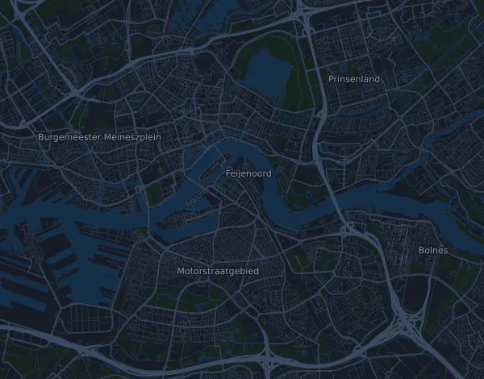

NN Marathon Rotterdam 42,2 km
- Distanz
- 42,2 km
- Höhenmeter
- ↑ 133 m
- Höchster Punkt
- 14 m ü. M.
- Untergrund
- Straße
- Profil
- Flach
Höhenprofil
Mit Mila vorbereiten
Mila ist eine Lauf-Coach-App. Nimmst du einen Lauf in deinen Plan auf, plant der Coach deine Wochen bis zum Start nach deiner Form und gibt dir eine Zielzeitprognose und einen Plan für Tempo, Getränke und Verpflegung auf der Strecke.

Der richtige Lauf am richtigen Tag.
Die Strecke

Über die Strecke
NN Marathon Rotterdam ist ein Straßenlauf in Rotterdam, Niederlande, über 42,2 km. Die Strecke hat insgesamt 133 Höhenmeter bergauf und 131 bergab, 3,2 m pro km, und ist damit flach. Der höchste Punkt liegt auf 14 m ü. M., der tiefste auf -5 m.
Die Strecke hat keine zusammenhängenden Anstiege ab 25 Höhenmetern.
In der Mila-App beschreibt der Coach die Strecke ausführlich in deiner Sprache und plant dein Pacing und deine Verpflegung dafür.
Pace-Tabelle
NN Marathon Rotterdam 42,2 km in 3:00:00 – Pace pro km und Zwischenzeiten
4:16 pro km · km 10: 42:39 · km 21,1: 1:30:00 · km 30: 2:07:58 · km 40: 2:50:37 · Ziel: 3:00:00
NN Marathon Rotterdam 42,2 km in 3:30:00 – Pace pro km und Zwischenzeiten
4:59 pro km · km 10: 49:46 · km 21,1: 1:45:00 · km 30: 2:29:17 · km 40: 3:19:03 · Ziel: 3:30:00
NN Marathon Rotterdam 42,2 km in 4:00:00 – Pace pro km und Zwischenzeiten
5:41 pro km · km 10: 56:52 · km 21,1: 2:00:00 · km 30: 2:50:37 · km 40: 3:47:29 · Ziel: 4:00:00
NN Marathon Rotterdam 42,2 km in 4:30:00 – Pace pro km und Zwischenzeiten
6:24 pro km · km 10: 1:03:59 · km 21,1: 2:15:00 · km 30: 3:11:57 · km 40: 4:15:55 · Ziel: 4:30:00
Die Zeiten setzen ein gleichmäßiges Tempo auf der ganzen Strecke voraus. Das ist reine Rechnung, keine Prognose: an Anstiegen, im Gedränge und an Verpflegungsstellen schwankt das Tempo.
Häufige Fragen
Wann findet NN Marathon Rotterdam 42,2 km statt?
NN Marathon Rotterdam 42,2 km findet am Sonntag, 11. April 2027 statt. Prüfe Datum und Startzeit beim Veranstalter.
Wie lang ist NN Marathon Rotterdam 42,2 km und wie viele Höhenmeter hat die Strecke?
Der Lauf ist 42,2 km lang mit 133 Höhenmetern bergauf und 131 bergab. Der höchste Punkt liegt auf 14 m ü. M.
Wie ist die Strecke von NN Marathon Rotterdam 42,2 km?
Die Strecke ist flach, mit durchschnittlich 3,2 Höhenmetern pro km. Sie hat keine zusammenhängenden Anstiege ab 25 Höhenmetern. Sie führt vom Start zu einem Ziel an einem anderen Ort. Der Untergrund ist Straße.
Wie teile ich mir NN Marathon Rotterdam 42,2 km ein?
Lauf mit gleichmäßiger Anstrengung und halte dich auf den ersten Kilometern zurück, wenn die Beine frisch sind und das Feld davonzieht. Die Strecke ist flach, ein gleichmäßiges Tempo pro Kilometer passt deshalb gut. In Mila bekommst du einen Pace-Plan für genau diese Strecke, passend zu deiner Form.
Ähnliche Läufe
Weitere Läufe in der Nähe
- Elektramat Marathon (Enschede Marathon) 42,2 km11. April 2027 · Enschede, Niederlande
- Arrow Venloop – Halve Marathon 21 km21. März 2027 · Venlo, Niederlande
- NN CPC Loop Den Haag – NN Halve Marathon (21,1 km)14. März 2027 · Den Haag, Niederlande
- Egmond Halve Marathon 21 km10. Januar 2027 · Egmond aan Zee, Niederlande
- Zevenheuvelenloop (15 km)21. November 2027 · Nijmegen, Niederlande
- Amsterdam Marathon 42,2 kmDatum offen · Amsterdam, Niederlande
Mit Mila vorbereiten
Der richtige Lauf am richtigen Tag.
Die Angaben stammen aus der Streckendatei und den Informationen des Veranstalters. Prüfe Datum, Startzeiten und Regeln beim Veranstalter.
Mila ist nicht mit dem Veranstalter oder den Sponsoren des Laufs verbunden und wird von ihnen weder gesponsert noch empfohlen. Namen und Marken gehören ihren Inhabern. Veranstalter oder Rechteinhaber? Änderung oder Entfernung beantragen